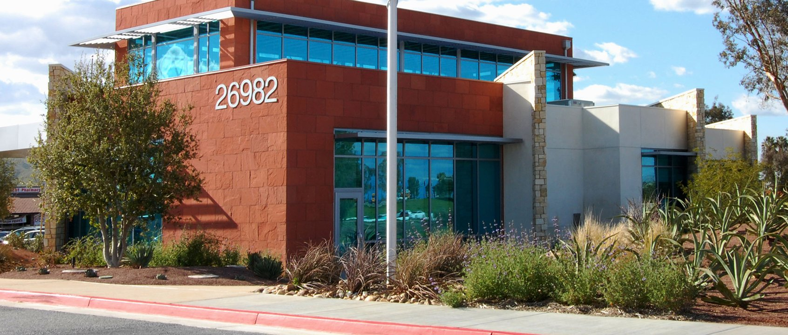
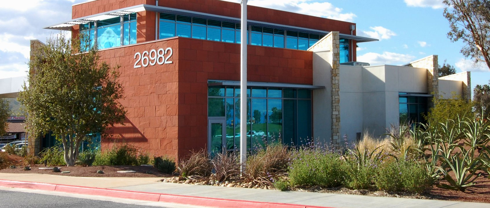
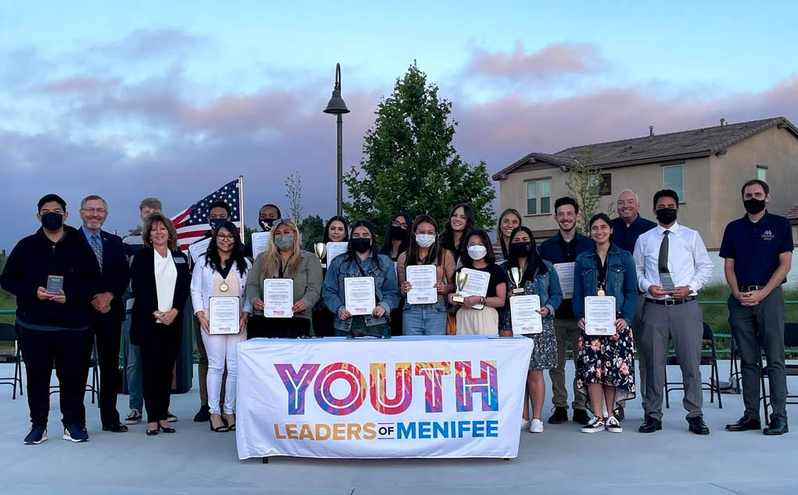
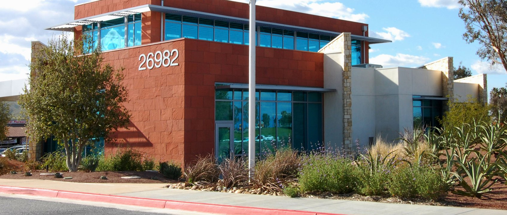
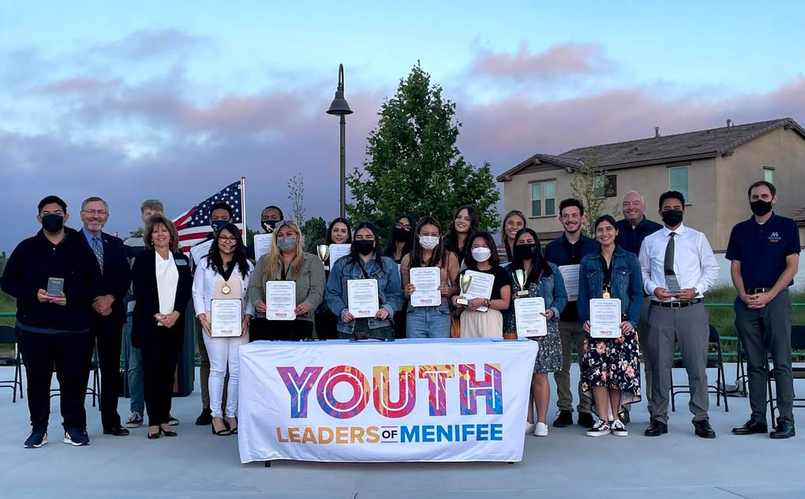

Nathan Santos
Hello there, thanks for viewing my page! My full name is Jose Nathaniel Santos, but I like keeping things simple so you can just call me Nathan (as what’s titled)! I was born March 17, 2005 in Quezon City in the Philippines and I grew up there – spending the first half of my childhood there. When I was 10 years old, I moved from the Philippines to here in the United States, and it was during the year 2015. I was an incoming sixth grader student at the time. There were a lot of changes I had to go through – my friends, my place of living, culture, foods, loved ones, and dreams. Part of those dreams that I evolved to love growing up are the humanities, and being exposed to diversity and being willing to be open about those certain facts of life is a breath of fresh air every time. This love for the field led me to the long formulated decision to pursue Political Science as my major here at the University of California, Riverside and being part of the Class of 2026. I am currently a first-year (freshman) student.
I first received education in the Philippines at an international school known as International School Manila, where the majority of my childhood peers were expats from a variety of other countries, and through my exposure to them, it started to open doors of curiosity about my interests in humanity. Another large factor that also contributed to my evolving interest was also my experiences in traveling. Over the course of my childhood all up until present, I have been to very many different countries. I have been to Japan and South Korea multiple times, and also have been to China and Hong Kong as a toddler, Singapore, Malaysia, and also before immigrating, I have also visited the United States – going all around California and also visiting areas in the midwest. Anyways, after I moved out of the International School Manila, I moved to another private school known as Colegio San Agustin, Makati; found in Makati, Philippines. I spent several years in that school until the summer of fifth grade when I moved here. Upon moving to the United States, I lived in San Diego. I attended Monroe Clark Middle School for my 6th and 7th grade education, then to Bell Mountain Middle School from 7th to 8th grade in Menifee, California. I spent all of my high school experience at Heritage High School in Menifee as well, and after that, I ended up here at UC Riverside.
I certainly have interests outside of those that I primarily pursue educationally, such as my love for aviation and also cars. These phases move in and out seasonally but I always stick to them. At this moment, I’m interested in motorsports – particularly rally racing such as the FIA WRC. Also, I am into video games, which makes my interests intersect since am active within the racing simulation community – particularly the game WRC10 and Dirt Rally 2.0
Experience
Fast Food Service Worker
• Prepared food for customers
• Served food to the customers
• Help ensure that the surrounding workspace was clean and safe for use
Library Volunteer
• Stacked, shelved, arranged, and organized books
• Assist guests in using library facilities and searching for media
Youth Leaders of Menifee
• Attended sessions regarding the planning and organization of events
• Made aware of the local volunteering opportunities
• Made progress on personal improvement
Education
UC Riverside
Portfolio
 



 